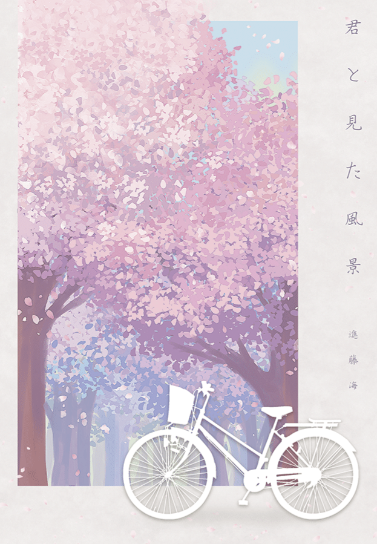

君と見た風景
2024.03.16

4年前の春、“進藤海”と名乗っていた時代に制作した短編小説集『君と見た風景』。その表紙をnoteにアップしていなかったので、今さらではありますが投稿します🌸こちらは『オリオンの旅』のイラスト同様、グラフィックデザイナーのヤスミヤ様(Xアカウント:@yasumiyasumi0)に描いていただきました。本誌は当初無料で配るつもりでしたが、温かい言葉とともにお金を出して買ってくれた皆さんのこと、僕は生涯忘れられません。心から感謝しています。